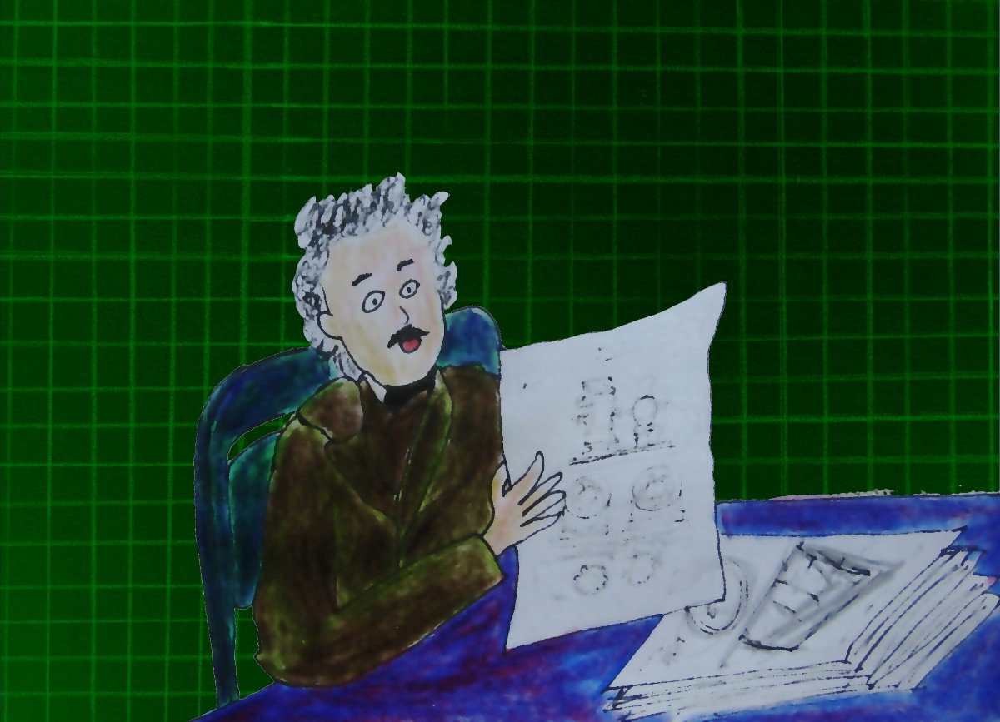
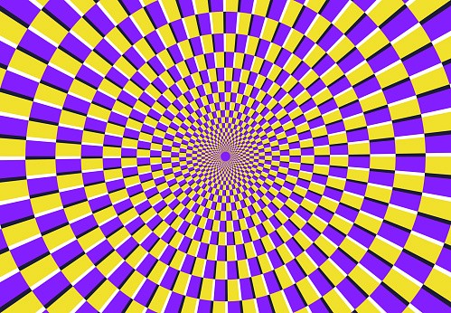
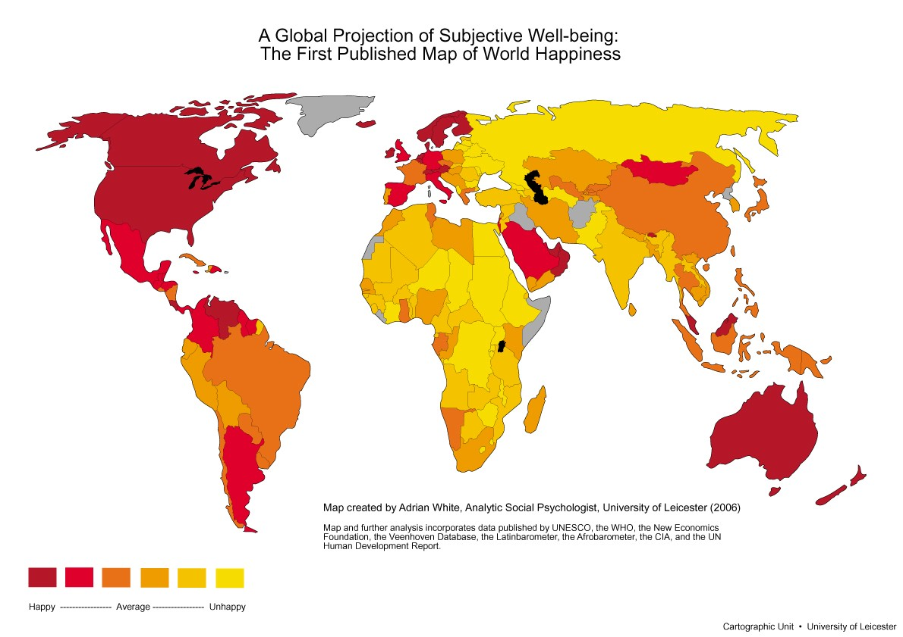
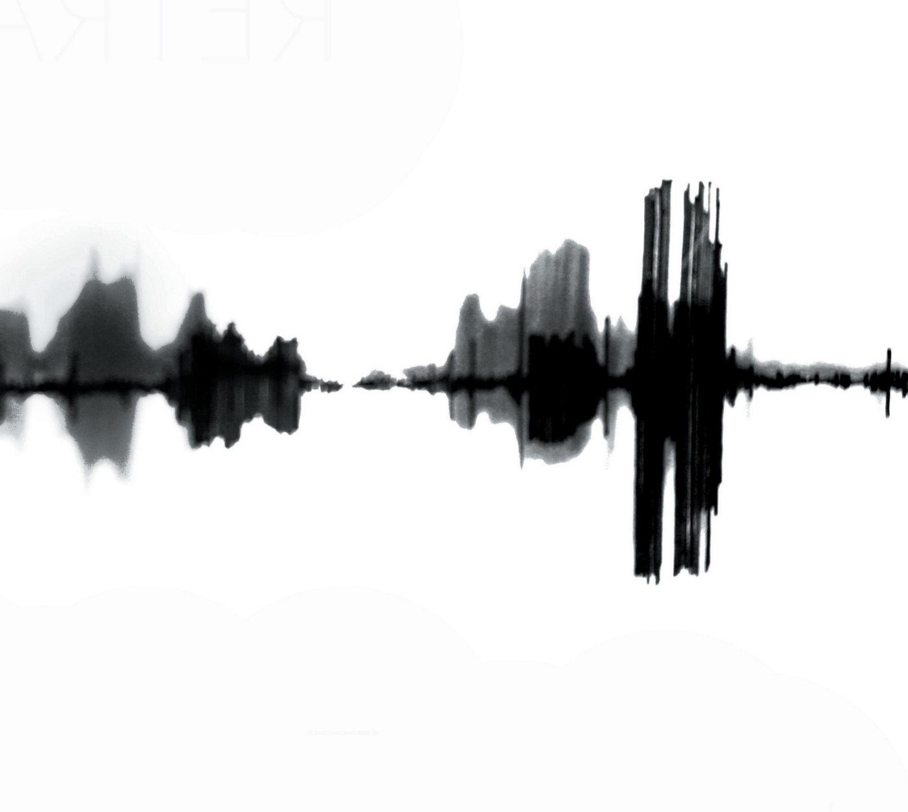
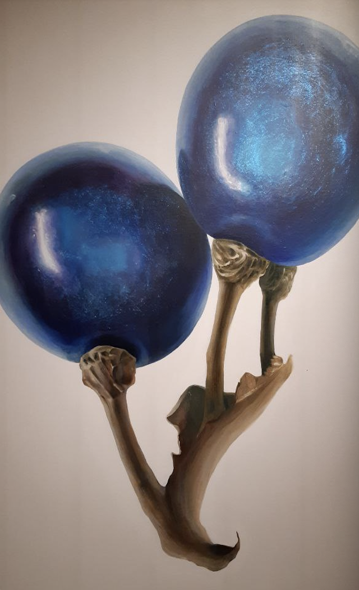

Awe
Is the feeling of awe built in or constructed by the brain?

Is the feeling of awe built in or constructed by the brain?
Three breakthroughs across science and technology

What sensory illusions teach us about how the brain works

What drives happiness around the world?

The baffling cosmic lighthouses of the sky

Printing with nature's brightest colours